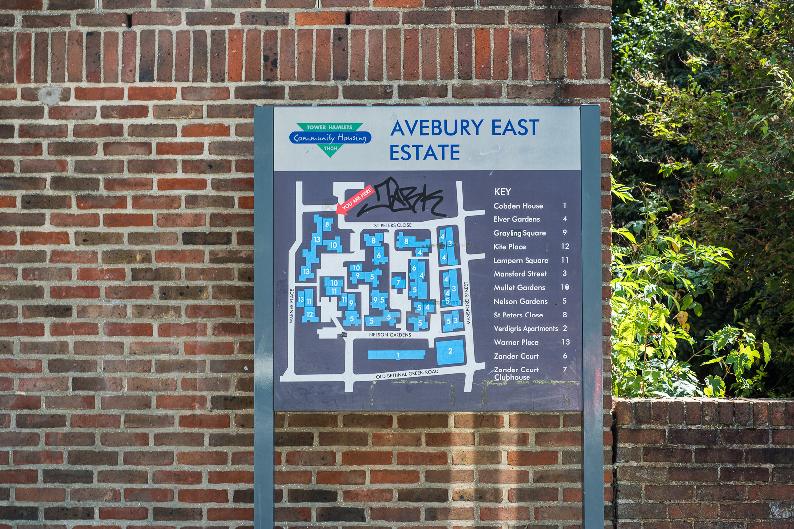

A Museum's Commission:
Housing as Laboratory
The group gathers outside Bethnal Green tube station on one of the hottest days of the summer — enough of a heatwave that the guide has already had to cancel one tour this season and is quietly monitoring the thermometer for this one. The guide introduces himself as a chartered town planner rather than a professional tour guide by trade, which turns out to matter: this is a walk built from planning documents, census returns and slum-clearance reports as much as from anecdote.
The museum commissioned the tour in 2024 to tie into its refreshed period-rooms exhibition, Rooms Through Time. The museum itself — formerly the Geffrye Museum, a set of 18th-century almshouses converted for display — has been showing domestic interiors to the public for close to a century. Its seven period rooms trace the history of housing and migration in Britain through reconstructed interiors: an 1870s middle-class parlour, a Jewish tenement flat of 1913, an Irish family's front room from the 1950s, a well-known 1970s living room, and an ex-council flat dated 2005.
The tour exists to do something the museum's interiors can't: show the streets those rooms came from. Almost all housing built in this corner of East London during the 20th century was social housing, making it — in the guide's words — a kind of laboratory for how Britain has tried to house its poorest citizens for over 150 years.
It was, for more than a century, one of the poorest parts of the country: chronic overcrowding, entrenched poverty, and — not unrelated — a long history of political activism. Social reformers who worked here include the sociologist Charles Booth, the housing reformer Octavia Hill, and the prison reformer Elizabeth Fry.
London's population exploded from roughly a million people in 1800 to around six million by 1900, driven first by migration from rural Britain during industrialisation, and then by international migration — much of it funnelled straight through the East End, historically the city's entry point for new arrivals off the docks and the railways.
Daniel Mendoza &
Jewish Bethnal Green
The group stands on a small patch of green — the survivor of what was once the actual village green of Bethnal Green, swallowed whole as London's expanding city closed in around it. The Georgian and early-Victorian terraces facing it were, in their day, genuinely fashionable addresses, well before the neighbourhood's long 19th- and 20th-century decline.
One listed house carries a plaque to Daniel Mendoza, a champion bare-knuckle boxer of the Georgian era and a Sephardic Jew, who lived here. His presence is the guide's entry point into a much bigger story: Bethnal Green was, for well over a century, a genuinely Jewish neighbourhood, and its Jewish community was central to the area's development.
Jews had lived in Bethnal Green throughout the 19th century, many of the earlier arrivals reasonably prosperous and settled in houses much like the ones facing the green. But the character of that migration changed sharply in the century's final decades, as large-scale flight from the pogroms of the Russian Empire — in what is now Russia, Poland and neighbouring territory — sent much greater numbers into East London. The Jewish population spread outward from its historic centre in Whitechapel, into Bethnal Green and around the edges of Boundary Street.
"Most people, particularly if they'd migrated here, landed in Bethnal Green and then mostly wanted to leave. It was a very bad place to live, and people wanted to get out to the suburbs — that had already begun in the 19th century, and it only accelerated."
The 1905 Aliens Act &
Churchill's Crossing of the Floor
Researching the tour sent the guide into the history of the Aliens Act 1905 — Britain's first immigration act, and one whose original provisions, he notes, remained on the statute book well into the modern era. Britain wasn't first to legislate on immigration (the United States and Australia had already done so), but the 1905 Act matters for a reason that has mostly fallen out of popular memory.
In May 1904, a young Winston Churchill — then a Conservative MP — opposed the government's Aliens Bill so strongly that he crossed the floor of the House of Commons to join the Liberals, partly over this issue. He argued the bill would appeal to prejudice against foreigners, against Jews specifically, and against labour competition, and declared himself in favour of what he called the old, tolerant and generous practice of free asylum from which the country had so greatly benefited.
Although the Act's text never mentioned Jews by name, its intent and effect were squarely aimed at the wave of Jewish migration then arriving from the Russian Empire's pogroms — and the MP for Stepney, whose constituency covered much of this migration's landing ground, was among those spearheading the legislation.
It's a footnote, the guide suggests, that tends to get lost in the grander story Britain tells itself about Churchill — but it sits at the start of a theme the tour keeps returning to: migration into this small patch of London, and the tensions it has repeatedly produced, again and again, for well over a century.
Tower Hamlets today remains highly diverse — 47% of its residents were born abroad — though the borough with the highest proportion of foreign-born residents in London is actually Brent, a leafy outer-London suburb, not one of the traditional East End boroughs. Newham, next door to Tower Hamlets, tops 50%. Bethnal Green itself, the guide suggests, may simply be a harder place to afford today than it once was to arrive in — alongside a longer-standing pull toward suburban aspiration that has shaped migrant settlement patterns in London for well over a century.
Concrete, Tenements &
the Sanitary Reformers
The group reaches a cluster of Victorian tenement blocks lining several streets near what is now Weavers Fields — the Waterlow Estate, built between 1869 and 1890 by Sir Sydney Waterlow's Improved Industrial Dwellings Company. It replaced a cleared slum, part of the earliest wave of what could be called slum clearance in Britain — a period before local government really had, in the guide's phrase, the powers to clear areas for public health reasons at all.
The museum's 1913 Jewish tenement room is modelled directly on this kind of building — specifically, on a flat once described in a memoir by someone who lived in the Rothschild Buildings, a similar and now-demolished tenement scheme in Whitechapel, built by the Rothschild family explicitly as mutual aid for other Jews who faced discrimination finding housing elsewhere.
In the mid-19th century, only around 9% of streets in Bethnal Green had any sewer at all — this despite the 1848 Public Health Act's requirement that drainage connect to sewers. The Scottish physician Hector Gavin toured the district that year and recorded what he found in a report titled Sanitary Ramblings:
"I found eight persons who live and sleep in one room. The room is ten feet by six feet and nine feet high... the children had low fever... at the corner of this is a large open cesspool."
— Hector Gavin, Sanitary Ramblings, 1848
The social reformer and journalist Henry Mayhew, visiting in 1850, described roads unmade and often little more than alleys, houses built without foundations and repeatedly subdivided, and drainage so poor that pigs, tanneries, boiling tripe and heaps of putrefying night-soil sat alongside the housing itself.
The Artisans and Labourers Dwellings Improvement Act 1875 was the first legislation letting councils clear slums from landlords with public funding — but the Waterlow Estate itself predates that, built by a philanthropic company on private investment, engineered to return 4% to its investors. It managed that return partly through genuinely innovative construction: the estate was built using early reinforced concrete, with its decorative facade elements precast off-site and its floors poured in concrete, chiefly for fireproofing.
The architect behind that innovation, Matthew Allen, is not well documented — early use of concrete rarely was — but he built extensively for the Improved Industrial Dwellings Company and other housing associations of the period.
Much of this was shaped by the leasehold system: landowners leased plots — sometimes for as little as twenty or thirty years — to speculative builders, with the land and buildings reverting to the freeholder at the lease's end. Short leases gave builders little incentive to build well, a pattern the trade journal The Builder (ancestor of today's Building magazine) campaigned against for decades, repeatedly urging denser, better-built European-style flats over the low-density housing that speculative builders preferred and the working poor could never have afforded anyway.
From Huguenot Looms
to Bomb Damage
A sculpture — Weaving Identities, by Peter Dunn, installed in the early 2000s — marks the entrance to Weavers Fields, the largest park in Bethnal Green at around 15.6 acres. The name commemorates the district's Huguenot silk-weaving industry: French Protestant refugees who settled here and in nearby Spitalfields and became renowned for their skill, until competition from Chinese and Indian imports put them out of business in the 1820s and the weavers largely left the area.
But the park itself is a much more recent creation than its name suggests. Weavers Fields did not exist as parkland before the Second World War — it was cleared from streets of ordinary housing devastated by the Blitz. A Victorian school, now stranded incongruously in the middle of open grass, is the clearest surviving clue to where the old street pattern once ran.
"It's not to imagine that this green space was always here. It would have been much denser originally — these homes were criticised at the time for being barrack-like, for jamming people in."
The County of London Plan:
Emptying the City to Save It
The creation of Weavers Fields, along with several other East London parks, traces back to the County of London Plan, published in 1943 — during the war — by Sir Patrick Abercrombie, the dominant figure in postwar British town planning. It built on the earlier Barlow Report, a government commission from the late 1930s that had already flagged deep concern about population and industry over-concentrating in London and the South East.
Abercrombie's analysis found parts of inner London — Shoreditch among them — with less than half a square metre of open public space per resident, against a target he set of sixteen square metres per person. The Plan proposed decentralising roughly 1.5 million people out of the congested inner boroughs into suburban rings and entirely new towns beyond the Green Belt, while licensing controlled where new industry could be built at all.
The programme, by most measures, worked — dramatically. London's population fell by more than a fifth between 1941 and 1961, even as the country's population grew overall. Planners hadn't actually predicted this: they expected population to keep falling through the postwar decades, and were caught out when the economy — and the birth rate — took off from the mid-1950s.
Bethnal Green's own population fell from 110,000 in 1931 to just 50,000 in 1961 — more than a fifty percent collapse within one generation. The Greater London Council struck formal agreements with towns as far away as Swindon to absorb displaced inner-London families, arrangements that continued into the 1960s.
"You'd feel like a survivor, in a way. You'd lived through the war, and then you watched almost everyone you knew leave. It must have felt like a kind of collapse — a literal, physical decline."
The Live-Work Streets
of Old Bethnal Green Road
Faced in a noticeably redder brick than the surrounding streets, the Winkley Estate was built between 1899 and 1904 by the builder brothers Henry and Charles Winkley, replacing an older cluster of terraced streets. Charles Winkley went on to become Mayor of Hackney and, later, a London County Council Alderman — enough of a civic career that the guide reads a genuine charitable intent into the scheme, even if it wasn't run as a formal philanthropic trust.
Unusually for the period, the estate deliberately mixed terraced houses over shops with small workshops and even a handful of light-industrial units — designed to serve the furniture-making, cabinet trade and clothing manufacture that dominated local employment, in a conscious attempt to replicate the mixed uses of an organic, older neighbourhood rather than build pure housing.
The estate is also, in the guide's telling, one of the few genuinely listed buildings on the route otherwise dominated by terraced houses of no special protection — a reminder that "historic" here is as often 1900s workers' housing as it is anything grander.
The Point Block
That Nearly Fell
Rising in an unmistakable butterfly plan above the surrounding streets, Keeling House was designed by Sir Denys Lasdun for Bethnal Green Metropolitan Borough Council and completed in 1957: sixteen storeys of maisonette flats arranged as a cluster block around a central service tower, originally with 64 homes across eight per floor.
The building's whole logic is light and air: rather than a conventional slab with windows on both long sides, Lasdun arranged four wings so that every flat faces roughly south, avoiding the north-facing "cold" units that plagued so much postwar housing. It was one of the earliest point blocks built in Britain, cast largely in reinforced concrete — high quality construction for its day, though not one that spared it decades of maintenance trouble.
By the early 1990s, Keeling House had deteriorated badly enough that Tower Hamlets council voted to demolish it. Historic England intervened, and in 1993 the building was listed — the first piece of postwar social housing ever to receive listed status in Britain, saving it from the wrecking ball days before it was due.
It was sold to a private developer in 1999, refurbished in consultation with Lasdun himself, and converted entirely into private ownership. Architects reportedly live there today. The flats, built to a pre-1963 space standard, remain notably small by modern expectations — some maisonettes were shown, some years ago, being reconfigured on a television design programme, opening up the bedroom floor above a ground-floor living space.
"I wonder how warm or cold these flats actually are. It's a lot of thermal mass — big, brutalist, reinforced concrete. I don't see anyone with makeshift shades hung up, though, so maybe it's fine."
A Different Kind
of Council Housing
Two council estates sit close together here, separated by only ten or twenty years of construction — and, in the guide's words, an enormous shift in architectural thinking. Where the earlier blocks pursue strict uniformity — everyone gets the same access to light and air — St Peter's Close, built by the Greater London Council in 1976 and named after the neighbouring St Peter's Church of 1841, is deliberately asymmetrical: low-rise, informally arranged, with unusually generous ground-floor entrances and what planners of the period called a "street in the sky" ethos, still recognisably brutalist in its materials but consciously rejecting the tower block as a model.
It belongs to a small cluster of same-year, same-style GLC infill schemes scattered around St Peter's Church — Grayling Square, Lampern Square, Mullet Gardens, Zander Court, Nelson Gardens and Cobden House among them, several reportedly named after a long-vanished fishpond once on the site. The period fits the low-key, human-scaled housing the GLC's architecture department pursued under chief architect Sir Roger Walters, whose approach favoured exactly this kind of irregular, pattern-language-influenced layout over the high-rise ethic of the preceding decades.
St Peter's Close had a moment of unexpected fame as a filming location for Lena Dunham's 2025 Netflix series Too Much: the American lead character's flat — arrived at expecting something more like a country house — was shot here, on an estate about as far from a Richard Curtis film set as London gets.
"I really love this estate. It's quite unusual — some flats face north, some face south, and the idea is that everybody's different, and there might be a different plot, a different outlook, for everybody."
Lubetkin's Towers &
the Bangladeshi Housing Struggle
The Dorset Estate, designed by the firm of Skinner, Bailey and the Russian émigré architect Berthold Lubetkin, is named after the Tolpuddle Martyrs — the early 19th-century agricultural labourers transported for organising for workers' rights, an apt namesake, the guide suggests, for a council housing scheme. Its two distinctive Y-shaped eleven-storey towers, George Loveless House and James Hammett House, are instantly recognisable and have appeared in television drama for exactly that reason.
Lubetkin, a committed communist who had already built acclaimed housing and a medical centre for Finsbury Borough Council, brought a Russian-constructivist sensibility to the blocks: precast, roughened concrete elements set against plain brickwork in a way that reads as distinctly his own.
By the 1960s and 70s, a Bangladeshi community — many from the Sylhet region, initially single men working the local textile trade — had begun settling in this part of Bethnal Green. They faced severe, organised racism in accessing both private and council housing; the local social club here was a well-known National Front meeting place, and racist violence, including the firebombing of flats, was endemic through the 1970s.
Facing exclusion from official housing lists, Bangladeshi families squatted in estates like this one — then considered hard to let, with many flats standing vacant — as well as in Victorian terraces nearby, part of a wider wave of over 20,000 squats across London in the period. The Bengali Housing Action Group, supported by the radical Race Today collective, organised to fight for formal housing rights.
On the night of local elections in 1978 — in which 41 National Front candidates stood for election in Bethnal Green — the young Bangladeshi clothing worker Altab Ali was murdered nearby. A 7,000-strong funeral march carried his coffin to Downing Street to demand police protection. That summer's Rock Against Racism carnival in Victoria Park, headlined by Tom Robinson and The Clash, drew huge crowds. The National Front won no seats.
The guide points to the area's contemporary politics as a direct legacy of that history: Tower Hamlets is unusual in Britain for how dominant a single community-rooted political party has become in local government, a pattern he traces back to decades of having to fight, street by street, for the right to a home here at all.
"The Lesson"
in Bronze
On a green corner of the Avebury Estate — an LCC scheme completed in 1948 — stands The Lesson: a mother guiding a toddler through his first steps, cast in concrete by the sculptor Franta Belsky, a Czech Jewish émigré born in Brno who fled the Nazi occupation of Czechoslovakia in 1939 and, later, the Communist takeover of 1948. The London County Council installed it here in 1959 as part of a scheme to commission public art specifically for housing estates — the idea, in Belsky's own words, that an estate needs something more than newspaper kiosks and bus shelters to feel like it has spirit.
A second casting of the same sculpture stands at a former school site in Wandsworth. The LCC filmed a short, gently propagandistic newsreel about the sculpture's installation in 1959 — footage that has since been reused by a contemporary artist, who interviewed local schoolchildren about the statue today and cut their indifferent, half-curious reactions against the earnest 1950s film crew who thought they were unveiling something momentous.
Placed against the backdrop of everything the tour has covered so far — decline, bomb damage, mass emigration from the borough — a sculpture of a mother teaching her child to walk reads as a small, deliberate act of civic optimism: an argument, in concrete, that this was somewhere worth raising a family after all.
"People who grew up around here today are pretty much inured to it — they know it's there, but they don't think about it much. In the 1950s, people thought it was a huge waste of money putting a piece of art on a housing estate at all."
Ending Where
the Rooms Begin
The tour ends at the Museum of the Home itself, recently reopened after an extensive refurbishment, its entrance now moved and a new café finally, gratefully, open on a punishing summer afternoon. Inside wait the seven period rooms the whole walk has been circling: the middle-class Victorian parlour, the 1913 Jewish tenement flat modelled on the Waterlow Estate's own history, the 1950s Irish family home, the 1970s living room, and the 2005 ex-council flat — each one now legible, the guide hopes, against the streets just walked.